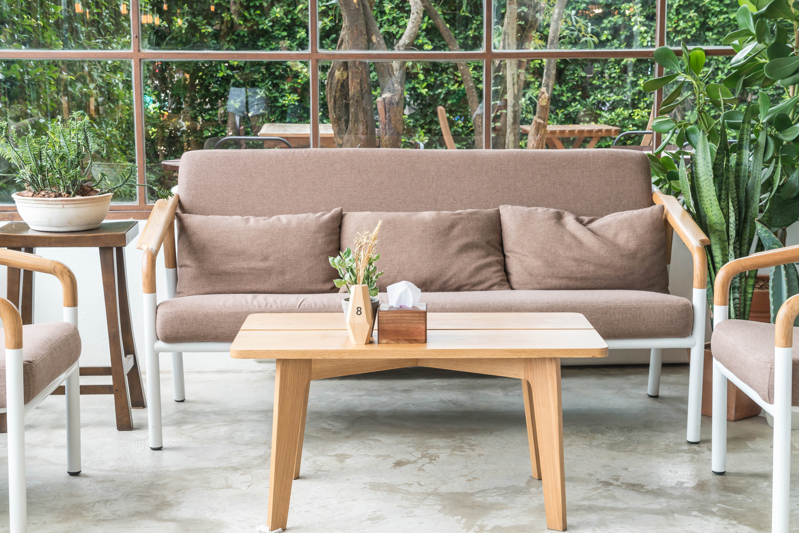

Outdoor furniture faces demands that indoor furniture never encounters — UV radiation, moisture, temperature swings, and the exposure that comes from being left outside for months at a time. WoodNest outdoor furniture is specified for these conditions rather than just styled for them. We use FSC-certified Western cedar, Grade-A plantation teak, powder-coated aluminium, and UV-stable synthetic ropes and fabrics throughout. Nothing in our outdoor range relies on paint or coating for weather resistance — the base materials themselves are weather-resistant.
Sale

Outdoor
Cedar Outdoor Bench
FSC-certified Western cedar, through-tenon joinery, natural oil.
From $490
View →